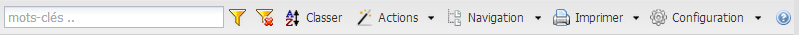
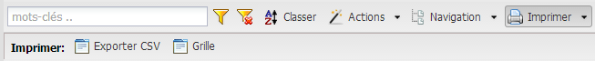

Menu des fonctions :¶
Figure 15 : menu des fonctions
Ce menu regroupe les fonctions pour manipuler l’objet affiché dans la grille principale.
Si vous cliquez sur le bouton, le sous-menu correspondant apparait au-dessous du menu de fonctions.
Si vous cliquez sur la flèche noire (à côté du bouton), une liste de visualisation du sous-menu apparait.
Dans les deux cas, vous pouvez accéder aux options pour la fonction choisie.
Les fonctions de la grille dépendent de l’objet ouvert. Tous les objets n’ont pas les mêmes fonctions.
Les fonctions de l’application sont :
Rechercher¶

Figure 16 : fonction Rechercher
Cette fonction permet de filtrer les résultats de la grille principale à partir du critère recherché (sensible aux accents).
Pour rechercher, cliquez sur le bouton  ou sur la touche entrer.
ou sur la touche entrer.
Pour effacer le critère, cliquez sur le bouton  .
.
Le filtrage s’applique sur plusieurs critères, par exemple, la colonne « nom » et la colonne « description » de l’onglet actif.
Les colonnes qui peuvent être filtrées peuvent être personnalisées à partir de la fonction configuration.
Classer¶

Figure 17 : fonction Classer
Cette fonction permet de trier la grille principale selon la colonne choisie. En cliquant sur ce bouton, la liste d’option disponible pour le tri s’affiche.
Cliquez sur la colonne choisie. Cliquez une deuxième fois, sur la même colonne pour inverser l’ordre de tri.
Les colonnes qui peuvent être filtrées peuvent être personnalisées à partir de la fonction configuration.
Actions¶

Figure 18 : fonction Actions
Selon l’objet actif, différentes actions sont disponibles. Ces actions sont entre autres :
- doImportSchema :
L’action doImportSchema permet d’importer un schéma de base de données (exemple un schéma .sql) dans l’application.
- doImportOMS :
L’action doImportOMS permet d’importer un modèle OMS (open modèle sphère) dans l’application à fin de générer le prototype.
Pour le moment, le fichier doit être nommé OMS.exp et placé dans le dossier media.
- doModelPrototype :
L’action doModelPrototype génère le prototype pour un modèle sélectionné.
- doModelGraph :
L’action doModelGraph génère le modèle conceptuel graphique pour un modèle sélectionné.
- doExportPrototype :
L’action doExportPrototype permet l’exportation du prototype sous format d’un modèle django (models.py).
- doExportProtoJson :
L’action doExportProtoJson permet l’exportation du prototype sous format d’un fichier json.
- doEntityPrototype :
L’action doEntityPrototype génère le prototype pour une entité sélectionnée.
- doWFlowResume :
L’action doWFlowResume affiche la liste des modifications en attente de validation (voir workflow).
- Accepter et Refuser :
Ces actions permettent d’accepter ou de refuser un (workflow) en attente.
Imprimer¶
Figure 20 : Fonction imprimer et son sous-menu.
La fonction imprimer permet d’imprimer le contenu de la grille principale. Le sous-menu d’imprimer est composé de deux options : Exporter CSV et Grille. Notez que vous pouvez aussi accéder aux options du sous-menu en cliquant sur le petit triangle noir situé à droit du bouton imprimer.
Quand vous cliquez sur l’option Grille, un nouvel onglet sera ouvert automatiquement dans votre fureteur, la fenêtre du dialogue d’impression sera affichée à l’écran. Selon le type d’imprimante installée sur votre ordinateur, vous pourriez enregistrer le résultat de l’impression en format PDF. Le contenu de la grille est transformé dans un format de sortie en HTML (le résultat est montré dans le nouvel onglet ouvert). Vous pouvez enregistrer le contenu de cet onglet comme une page web (HTML).
Quand vous cliquez sur l’option Exporter CSV, une fenêtre sera affichée à l’écran. À partir de cette fenêtre, il est possible d’ouvrir le fichier avec un logiciel de feuille de calcul comme Microsoft Excel ou Libre Office Calc ou de l’enregistrer sur votre ordinateur.
Note
Notez que le contenu de la grille principale est imprimé ou exporté au complet. Par exemple, si vous avez 3000 résultats qui sont distribués dans 10 pages, quand vous utilisez une des fonctions Grille ou Exporter CSV, les 3000 résultats seront imprimés ou exportés. Il n’est pas nécessaire de se déplacer à chacune de pages pour faire l’impression/exportation.
Filtres¶

Figure 21 : Fonction filtrer et son sous-menu.
Cette fonction s’affiche avec les objets qui ont un workflow. Les options sont :
- À vérifier : affiche la liste des objets modifiés par l’utilisateur et en attente d’acceptation par l’administrateur.
- Accepté : affiche la liste des objets modifiés par l’utilisateur et acceptés par l’administrateur.
- Refusé : affiche la liste des objets modifiés par l’utilisateur et refusés par l’administrateur.
Onglets¶

Figure 22 : Fonction onglets et son sous-menu.
Pour l’objet Proprieté, il existe une fonction Onglets qui permet d’afficher les propriétés de deux façons :
- Default : pour l’affichage par défaut nom de propriété ;
- admin : permet d’afficher les propriétés préfixées par le nom de la table.
Configuration¶

Figure 23 : Fonction configuration et son sous-menu.
Cette fonction permet la personnalisation de l’application.
Note
L’accès à toutes les options de la fonction Configuration est réservé aux utilisateurs avec les droits. Si votre compte n’a pas les droits suffisants, vous verrez uniquement les options pour la configuration de base.
Quand vous cliquez sur le bouton Configuration (ou sur le petit triangle noir à côté), un sous-menu apparait. Ce sous-menu est composé des options suivantes :